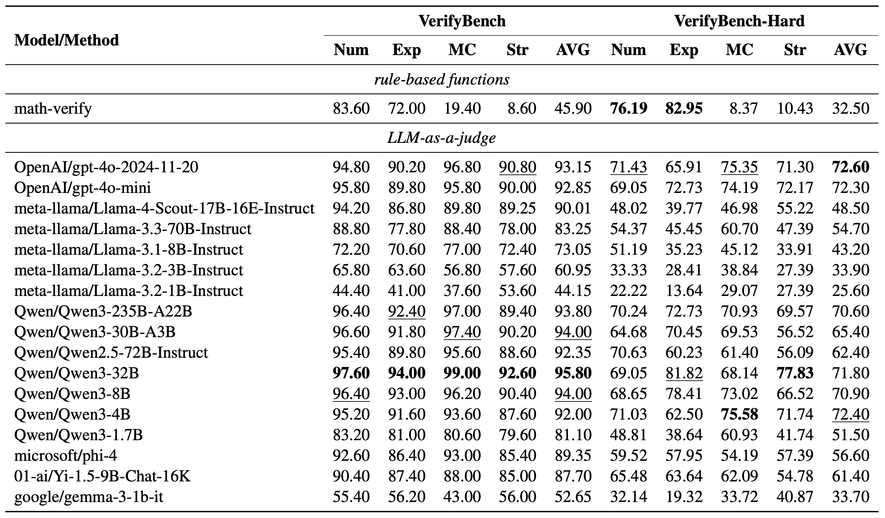

Large reasoning models such as OpenAI o1 and DeepSeek-R1 have demonstrated remarkable performance in complex reasoning tasks. A critical component of their training is the incorporation of reference-based reward systems within reinforcement learning (RL), where model outputs are evaluated against ground truth references. However, existing reward benchmarks focus on preference comparisons between responses rather than evaluating verification against ground truth references, leaving a critical gap in our ability to evaluate verification systems used in reasoning model training. In this paper, we introduce VerifyBench and its challenging variant VerifyBench-Hard, two benchmarks specifically designed to assess reference-based reward systems. These benchmarks are constructed through meticulous data collection and curation, followed by careful human annotation to ensure high quality. Our comprehensive evaluation reveals that while larger model-based verifiers show promise on standard cases, all current systems demonstrate substantial room for improvement on challenging instances. Through systematic analysis of performance patterns across reasoning tasks and error categories, we provide insights for advancing reference-based reward systems. These benchmarks establish a standardized framework for improving verification accuracy, ultimately enhancing reasoning capabilities in models trained via RL.
Overview of the benchmark construction process. The upper section outlines the pipeline used to construct VerifyBench, whereas the lower section details the pipeline for VerifyBench-Hard. The components highlighted by black boxes denote the final entries included in the benchmark.
We evaluate the performance of various verification approaches on both VerifyBench and VerifyBench-hard. For rule-based baselines, we adopt the widely used math-verify package. In the LLM-as-a-judge setting, we prompt LLMs to perform verification.
Overall performance(%) of VerifyBench and VerifyBench-Hard. Num stands for Numeric Values, Exp stands for Expressions, MC stands for Multi-choice and Str stands for String.
@misc{yan2025verifybench,
title={VerifyBench: Benchmarking Reference-based Reward Systems for Large Language Models},
author={Yuchen Yan and Jin Jiang and Zhenbang Ren and Yijun Li and Xudong Cai and Yang Liu and Xin Xu and Mengdi Zhang and Jian Shao and Yongliang Shen and Jun Xiao and Yueting Zhuang},
year={2025},
eprint={2505.15801},
archivePrefix={arXiv},
primaryClass={cs.CL},
url={https://arxiv.org/abs/2505.15801},
}